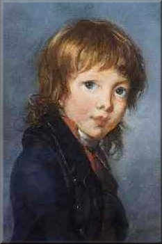
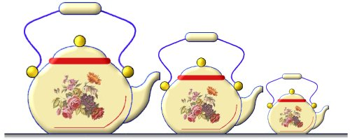

|

The
fifth generation
Two marriages,
three régimes, a great-aunt...
 Jean-Baptiste is our
ancestor of the fifth generation to live in New France, but
he is also the last.
During his childhood, the colony is conquered by the British.
The adventure of New France comes to an end after a century and a
half.
Ten years old
at the time, Jean-Baptiste
witnesses this turning point in our history. His father Joseph is
forty; his
grandfather had died a few years before he was
born. The family lives in the Sault-au-Récollet.
Jean-Baptiste
has a life full of historic
events, and many descendants.
Through his wife, we are related to a woman right at the very
forefront of the colony's history, Marguerite
Bourgeoys. Yes indeed,
one of the pioneers of Montréal, the saint, but also our
great-aunt....
Tracing our agnatic
ancestry, the ancestors who bear the same name as
we do, is interesting. But when you also look for the
collateral lines, that is, the wives and their lineages, it
becomes a grab bag of surprises. In the previous generation we
had discovered our kinship with Hélène Desportes; in this one,
we meet Marguerite Bourgeoys, and that's not all ....


Jean-Baptiste spends the first years of his life in New France,
but in 1759 everything
changes... to
find out more >>>

From 1759
to 1764 the Canadiens lived through a five-year period of great importance because of the
unexpected nature of the measures the English applied to the
French colony... to
find out more >>>

On August 10, 1764, on the Place
d'Armes in Quebec, before the troops under arms and a large
crowd, the Royal Proclamation is read. It is the first
English constitution given to the colony, which is
now called the "Province of Quebec". So begins the British
régime... to
find out more >>>
|
The history of the Conquest is
so interesting that I thought I would add four articles that appeared
a few years ago in the daily Le Soleil, written by
Louis-Guy Lemieux. I have added pictures to them.
BIGOT'S GANG,
(the 18th-century sponsorship
scandal)
While the people starve,
the intendant and his friends amass fortunes. They are put on trial, but
they get off lightly ... read
more >>>
VAUDREUIL'S SACRIFICE
Vaudreuil having signed the capitulation
of Montréal to spare its people a massacre like
the ones at Quebec and on the Côte-Sud, the king holds him responsible for the dishonour of the French army ... read more >>>
PORTRAIT OF AN ARISTO LOST IN
CANADA
Throughout his short adventure in America,
Montcalm harbours a deep dislike of everything Canadian ...
read more >>>
A SHORT HISTORY
OF A GREAT
DISASTER
Quebec surrenders while victory is still
possible... read more >>>
|

Canada
becomes British because the English like their
tea sweet... During
the Seven Years' War (1756-1763),
England conquered Canada by force of arms, but
also Guadeloupe, Martinique and France's
possessions in India. In the negotiations
leading to the Treaty of Paris, since England
could not keep everything, the discussions turned on
"which country keeps which colony?"
Canada could just as well have gone back to France,
despite England's military victory. But
a powerful lobby was on the watch and did everything to make
England choose Canada and leave the two
Caribbean islands to France. It was the sugar
lobby. At that time sugar was
as important economically as oil is
today. Rich English planters,
settled in Jamaica for three generations, the
richest men of the day, did not want to
lose their trade monopoly on the sale of sugar
throughout the British Empire. Some planters were
members of the British Parliament and so could vote
as they pleased; others used every means (bribes,
blackmail, corruption...) to sway the votes
of members of Parliament in their favour. They formed
a powerful lobby that put all its energy, its
power and its money into getting Parliament to choose
Canada, a cold country of little value apart from
furs, but one that would not compete with
their trade. They won
their case. France, too, was satisfied with the Treaty,
since it kept the sugar of the Antilles and the fisheries
of Saint-Pierre and Miquelon. The seventy thousand Canadiens of the
St. Lawrence valley counted for little with the minister Choiseul, and
they were expensive. He had also understood that France's withdrawal
would free New England from the New France that surrounded it and relentlessly harassed its frontier posts, with their
Indian allies. He was pleased to set a potential
trap for England in this way. The English minister William Pitt was aware
of the risk but preferred it to French supremacy. It would
take only twenty years to give the Americans ideas
of independence... 
We
have been British for 250 years; our customs and manners are
British... with a predominantly American influence and a
Franco-Latin tinge that makes us distinctive.
The lion took the colony from the kingdom of the lilies, but the
Canadiens survived, with their language and their religion, by adapting
and taking on the conqueror's new values and customs,
often very much to their advantage.
Willingly or not, despite the struggles, the rivalries,
the mistrust, the contempt, the "two solitudes", the Canadiens
of 1759 and their descendants truly became British
subjects.

Since the British were the masters and the
economic and cultural elite, Canadiens who wanted to move in
good society naturally borrowed their way of life. First
they went to their schools, their universities, their
museums, their libraries, their theatres, their holiday
resorts. The Canadiens
adopted British table etiquette, Victorian
furniture, British sports... In fine weather they received their guests in flower
gardens and served them tea. There is hardly a house today that does not still have
English china inherited from the parents, whatever its quality. Even our funeral rites and our cemeteries are English.
In the 20th century, French Canadians developed
their own institutions, associations and sports clubs, or took over from the English
institutions. One example: The Montreal Museum of Fine Arts, built
in 1912 by the Art Association of Montreal, founded in 1860 by Francis
Fulford, became the Musée des Beaux-Arts de Montréal around
mid-century.
 From the moment the
parliamentary
monarchy was introduced, the Canadien felt at home in it and
has been in his element there ever since. In such a
decentralized system Quebec can assert its difference and enjoy
a degree of autonomy. This is unlike a
republican system, as in the United States or France, where nationalism
has to be more uniform, the Republic acting as a steamroller
that flattens everything and does not recognize
differences. From the moment the
parliamentary
monarchy was introduced, the Canadien felt at home in it and
has been in his element there ever since. In such a
decentralized system Quebec can assert its difference and enjoy
a degree of autonomy. This is unlike a
republican system, as in the United States or France, where nationalism
has to be more uniform, the Republic acting as a steamroller
that flattens everything and does not recognize
differences.
The British built our big cities in
their own way, with lanes for servicing houses from the back,
big parks and gardens. Our townhouses,
with a hallway running from the front door to the back door, the rooms
on either side of the hallway and the kitchen at the end, follow the
English model. Our suburban bungalows, the haven of the
postwar family, are English. 
In Quebec City, right
after the Conquest, the British lowered the height of the
fortifications to get views of the river, and they
built lookouts and parks.
It was they who, in the 19th
century, preserved the walls of Quebec, restored them with
private funds and completed them, against the popular movement
calling for their demolition as cumbersome and outdated. So it is to its time as an English city that
Quebec owes the beauty it is so proud of today, and
which gives it its renown as the only walled city
in America.
A Quebecer who goes to London today feels
far more at home there than in Paris. He recognizes himself in
the city's layout, the breakfasts (eggs, bacon), the people. Like the British, we treat each other as equals in couples.
We are patient and disciplined, so we are willing to
queue at the bus stop or at the theatre. We love
our comfort and our peace and quiet. We are good
losers; for example, we can support a sports team we
love even when we know it won't win. We like
nature "the English way", that is, natural, and not
over-structured like nature "the French
way".
Quebecers have acquired the ability to absorb
other cultural influences, rename them in French and serve them
up "their own way". Our folk music is in fact
Irish and Scottish in inspiration. The same thing can be
seen in modern music. Beatles songs were
translated into French by Quebecers and
became hits in Quebec many months before Beatlemania
swept America. Progressive rock was adapted the
Quebec way by people like Pierre Flynn and others.
Our British tinge is stronger than we
care to recognize or admit; in fact we never think about it, so natural is our way of life to us. The
Conquest was probably the best thing that could have happened,
considering the disastrous state New France and its
people were in. In any case, the Canadiens
of the day drew several benefits from it, despite everything, and so, inevitably, did their descendants. We can say that the Conquest served as a
springboard for a colony on the brink of disaster.
 |